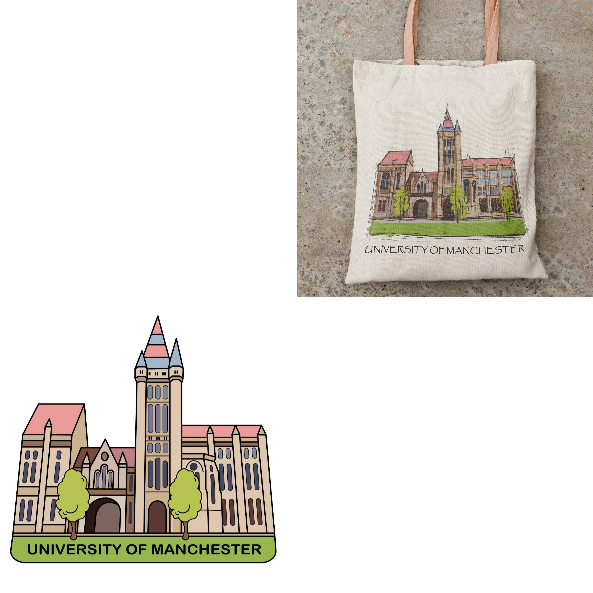

200 Years - UoM Cotton Bag 2024
Commemorate the 200th anniversary of the University of Manchester 💜 with this exclusive bag This Gothic arch is one of the most distinctive buildings of the University of Manchester, designed by Alfred Waterhouse, who also designed the Natural History Museum in London. Made from warm-colored sandstone, this magnet features the Queen's Arch, the John Owen's Building tower, and Whitworth Hall, showcasing these iconic university landmarks.
✅Material: Fine Egyption Cotton
✅Dimensions: W35cm * H40cm